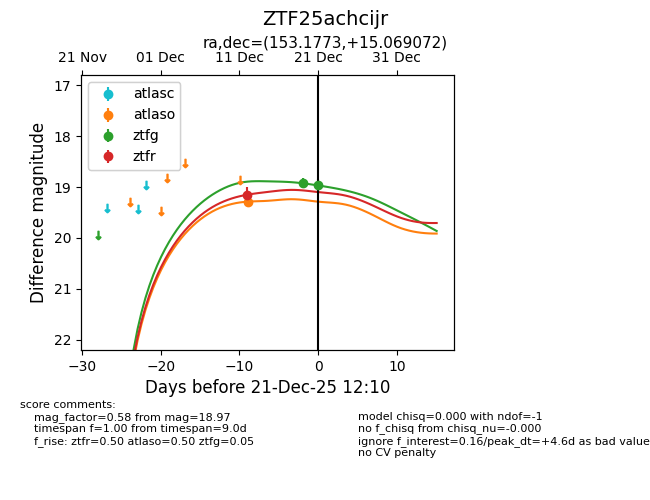
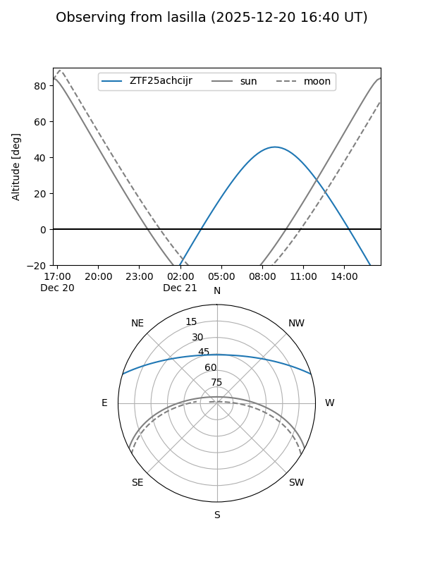
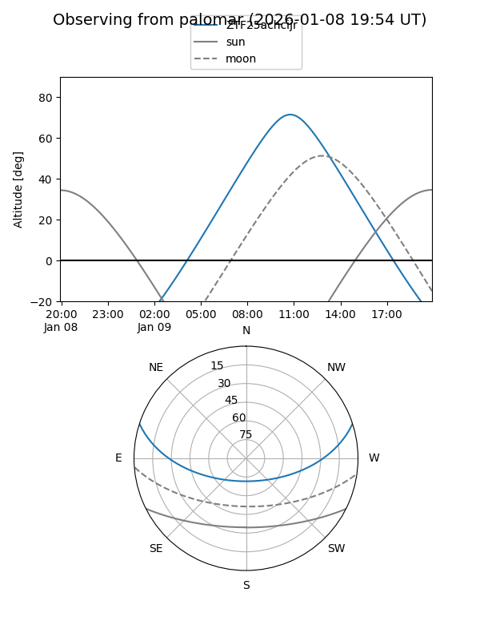

ZTF25achcijr
Target ZTF25achcijr at 2026-01-09 12:49
Aliases and brokers:
FINK: link
Lasair: link
ALeRCE: link
alt names
ZTF25achcijr (ztf,fink_ztf)
Coordinates:
equatorial (ra, dec) = 153.1773,+15.06907
equatorial (HMS+DMS) = 10:12:42.55,+15:04:08.66
galactic (l, b) = (222.8198,+51.25403)
Flags:
Photometry:
last ztfg=18.97, ztfr=18.88
2 ztfg, 2 ztfr detections
Lightcurve

Visibility


Additional plots